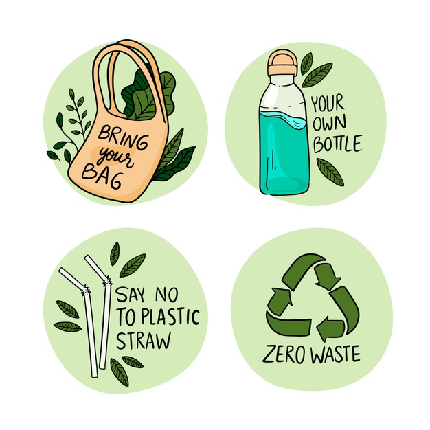
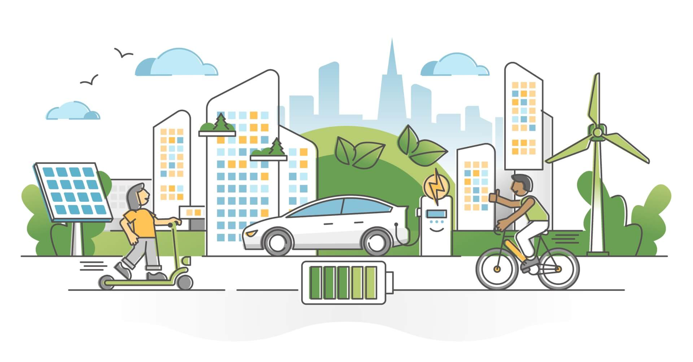
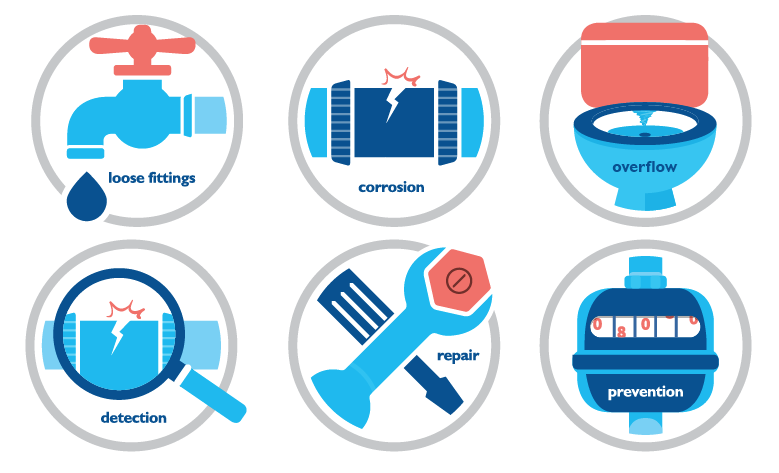

Sustainable Initiatives
There are numerous sustainable initiatives and projects around the world that aim to address environmental challenges and promote sustainability. These initiatives focus on various aspects such as renewable energy, waste management, conservation, and more. Here are a few examples of sustainable initiatives making a positive impact:
1. Renewable Energy Projects
Many countries are investing in renewable energy sources like solar, wind, and hydropower. These projects aim to reduce reliance on fossil fuels and mitigate greenhouse gas emissions. Examples include solar farms, wind turbine installations, and hydroelectric power plants.

2. Zero Waste Programs
Zero waste initiatives are dedicated to minimizing waste generation and promoting sustainable practices such as recycling and composting. The primary objective of these programs is to divert waste from landfills and foster a circular economy, where resources are utilized efficiently and waste is minimized. Community recycling programs encourage proper disposal and recycling of materials, while composting facilities enable the conversion of organic waste into nutrient-rich compost.

3. Conservation and Reforestation Projects
Conservation initiatives focus on protecting and restoring natural habitats, biodiversity, and ecosystems. Reforestation projects aim to combat deforestation and restore forested areas. These initiatives often involve planting trees, wildlife conservation efforts, and habitat restoration programs.
4. Sustainable Agriculture
Sustainable agriculture initiatives promote environmentally friendly farming practices that reduce chemical inputs, conserve water, and protect soil health. These projects focus on organic farming, regenerative agriculture, permaculture, and supporting small-scale farmers.

5. Green Building and Sustainable Architecture
Green building initiatives promote energy-efficient and sustainable construction practices. These projects aim to minimize the environmental impact of buildings, improve energy efficiency, and incorporate renewable energy sources. Examples include LEED-certified buildings, green infrastructure projects, and sustainable urban planning.
6. Sustainable Transportation
Sustainable transportation initiatives focus on reducing carbon emissions and promoting eco-friendly modes of transportation. Examples include the development of electric vehicle infrastructure, bike-sharing programs, public transportation enhancements, and pedestrian-friendly infrastructure.

7. Water Conservation Projects
Water conservation initiatives aim to protect water resources, reduce water waste, and promote responsible water usage. These projects include water-saving campaigns, wastewater treatment systems, and community-based water management programs.

8. Community Education and Awareness
Community education and awareness programs play a vital role in promoting sustainable practices. These initiatives focus on educating communities about environmental issues, sustainable lifestyles, and empowering individuals to take action. Examples include workshops, seminars, environmental campaigns, and educational materials.
Back to Top